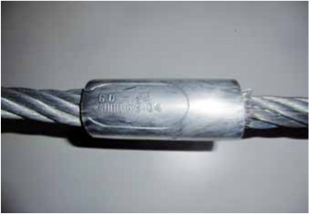
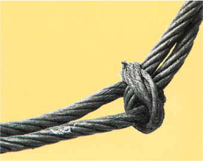
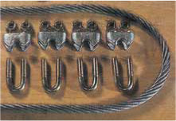
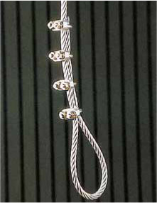
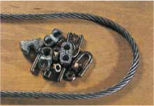
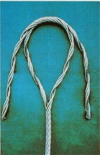
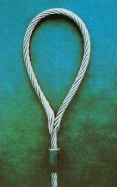
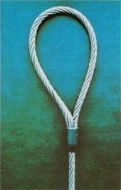

Jedes Seil ist nur so gut wie seine Endverbindung. Seilendverbindungen zur Bildung von Aufhängeösen werden heute meist durch Pressklemmen hergestellt (Bild 9-1).

Bild 9-1: Pressklemme mit Verpresserkennzeichen
Pressklemmen aus Aluminiumlegierungen sollen gestatten, die Lage des Totseilendes zu kontrollieren. Sie müssen das Kennzeichen des Verpressers tragen. Es besteht aus zwei eingeprägten Buchstaben.
Gespleißte Seile sind zwar statthaft, bei Belastung eines einzelnen Seiles dreht sich die Last jedoch und öffnet den Spleiß. Deshalb muss das Drehen der Last verhindert werden. Seilendverbindungen durch Knoten herzustellen ist nicht zulässig, da die Tragfähigkeit des Seiles durch hohe Flächenpressung und Knicke stark herabgesetzt wird (Bild 9-2). Die Litzen und Drähte werden so gestaucht, dass der Seilverbund nicht mehr gewährleistet ist.

Bild 9-2: Unzulässiger Knoten zerstört den Seilverbund
Drahtseilklemmen sind für Seilendverbindungen von Anschlagseilen grundsätzlich ungeeignet. Sie dürfen nur zur Herstellung einer speziellen Endverbindung für die einmalige Verwendung genutzt werden. Durch die Drahtseilklemme wird das Seil stark beansprucht. Die Seilklemmen müssen unter Belastung nachgezogen werden, weil das Seil unter Belastung dünner wird (Querkontraktion) und sich hierdurch Seilklemmen lockern können.
Auch bei ihrer einmaligen Verwendung ist besondere Sorgfalt notwendig:

Bild 9-3: Mindestens 4 Seilklemmen sind nötig!

Bild 9-4: Fertig zum Einsatz! Alle Klemmbacken sitzen auf dem tragenden Strang

Bild 9-5: Sofort nach Benutzung demontieren!
Die alten Drahtseilklemmen nach der früheren DIN 741 mit einfachen Muttern und schmaleren Auflagen sind nicht mehr genormt und dürfen keinesfalls für Anschlagseile verwendet werden.
Neuerdings werden Seilverbindungen immer mehr in Form des „flämischen Auges“ hergestellt. Das „flämische Auge“ entsteht durch Aufdrehen des Seilendes in zwei Enden mit je drei Litzen. Die beiden Enden sind etwa doppelt so lang wie die gewünschte Öse. Die beiden Enden mit den drei Litzen werden gegeneinander gebogen und gegenläufig miteinander verseilt. Dadurch entsteht die Öse.
Den Abschluss der gegeneinander zur Öse verseilten Litze bildet eine Stahlpresshülse (Bilder 9-6 bis 9-8).
Die bisherige Norm DIN 3095 wurde zurückgezogen. Gültig ist heute DIN EN 13411 „Endverbindungen für Seile aus Stahldraht — Sicherheit Teil 3 — Verpresste Seilschlaufen“.
So entsteht ein „flämisches Auge“:
 |
 |
 |
Bild 9-6: Die beiden Enden mit den drei Litzen sind in der Mitte zusammengebogen. Von hier aus beginnt das Verseilen |
Bild 9-7: Die beiden Enden sind gegeneinander verseilt |
Bild 9-8: Über die gegenläufig verseilten Enden ist eine angeschrägte Stahlpresshülse geschoben und verpresst |